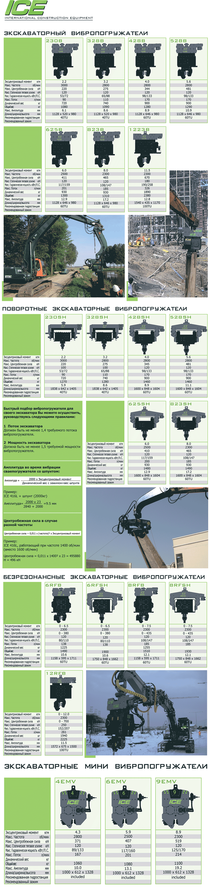

Экскаваторные вибропогружатели
Обычные, поворотные, безрезонансные и мини-вибропогружатели с приводом от экскаватора.
Модели и исполнения
Запросить комплектациюВ листе для B, SH и RFB/RFSH обозначения вида 40TU стоят в строке «Рекомендованная гидростанция», строка зажима пустая. Для мини-моделей указано «included» без названия узла. Эти неоднозначные строки исключены из подбора сочетаний.
Опубликованный ориентир для экскаватора — поток не менее 1,4 требуемого потока вибропогружателя и мощность не менее 1,5 требуемой мощности. Рабочую конфигурацию проверяют с техническим отделом.
Фотографии и материалы серии

